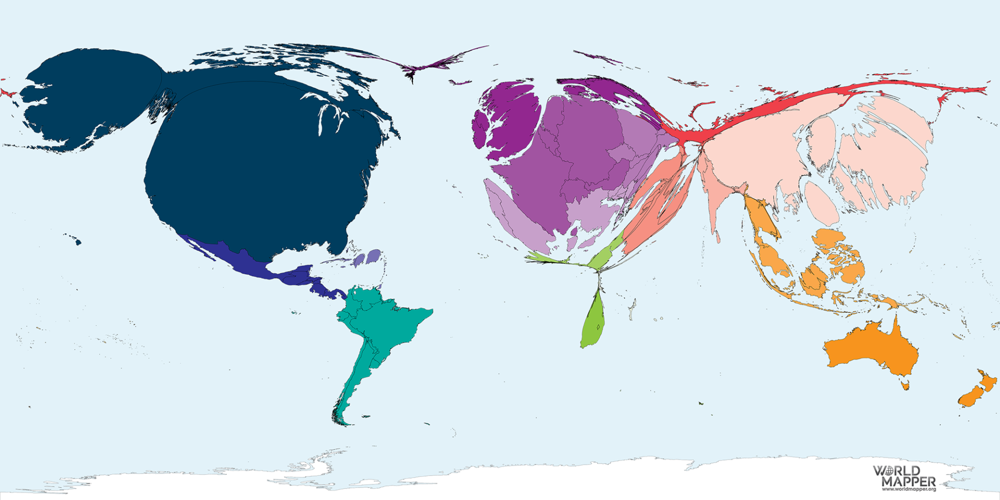

The History of Fast Food
Fast food seems to be a staple of American culture now. Yet how did it come to be? And how did it become so popular?
The history of fast food is quite hard to pin down, as there is no definitive time or place where it truly began. The most obvious, and perhaps appealing, option is that of McDonald’s. McDonald’s was started by Dick and Maurice McDonald, but it was not until Ray Kroc came along and pushed for expansion that McDonald’s began to take on the shape it has today. Yet, McDonald’s isn’t really the inventor of fast food (Penfold, Steve).
The idea of fast food – cheap food ready quickly – is not a new one. Historically, there were many different forms of fast food, “from street carts through crepe stands to fish and chip shops… diners served cheap food to customers on the go, hot dog stands specialized in a few products for a self-serve clientele, [and] White Castle sold standardized burgers in cities across the United States.” (Penfold, Steve). And these all existed before World War II. Still, many of the most famous brands of today, like McDonald’s, Kentucky Fried Chicken, Burger King, and Taco Bell, all started in the postwar era (Penfold, Steve). “Indeed, as of 1999, seven of the ten largest fast food chains in the United States – and most of the largest in the world – traced their origins to the decade and a half after 1948.” (Penfold, Steve).
Soon after Ray Kroc got involved in McDonald’s, he pushed for massive expansion. He knew that McDonald’s could do well across the United States, but it even expanded internationally. Although McDonald’s was the frontrunner in this regard, other fast food brands quickly began to copy McDonald’s approach. One fast food chain founder even said, “‘If I had looked at McDonald’s and saw someone turning hamburgers while he was hanging by his feet, I would have copied it.’” (Penfold, Steve). The growth of fast food was quite rapid, as companies spread nationally and internationally, and numerous similar chains were created to attempt to replicate the success of places like McDonald’s and KFC (Penfold, Steve).
“This map shows the countries proportional to their total number of McDonald’s restaurant outlets in 2018.” (“McDonald’s Restaurants”).
As it is quite easy to see from the image above, McDonald’s in the present day has grown to be an international brand, although it does have an emphasis on Western Europe, Asia, and, of course, North America. Although there are 105 countries without a McDonald’s, consumer goods policy analyst Jack Russo still says that “Two-thirds of their revenue is outside of the U.S.” (Naudziunas, Jessica). There are countries without McDonald’s, but not for McDonald’s lack of trying. There have been political or economic reasons why franchises haven’t caught on in various countries, such as the price of importing goods (Naudziunas, Jessica). Still, McDonald’s, and many other fast food chains, have clearly managed to be successful worldwide.
There are many things that made fast food appealing, and advertising aimed to only emphasize these points to as many people as they could. In 1968, KFC made advertisements targeting women, saying that “Colonel Sanders is a woman’s best friend… [He] fixes Sunday dinner seven days a week… All you do is pick it up.” (Penfold, Steve). There were also various ad campaigns that began to target children, such as McDonald’s creation of Ronald McDonald. And these ads were effective: by “1973, 97 percent of American children recognized Ronald.” (Penfold, Steve). These ads increased brand recognition substantially and helped make fast food become extremely popular both in the United States and internationally.